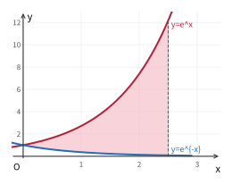
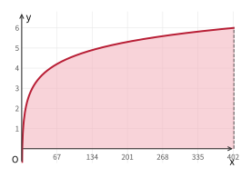
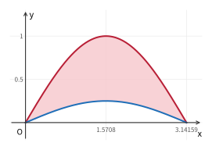
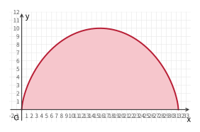

別冊章末問題の解答
1. 定積分 \(\displaystyle\int_0^1 5x(x^2+1)^{4}dx\) の値を求めよ。
置換
\(u=x^2+1\)、\(du=2x\,dx\)。範囲は \(x:0\to1\) のとき \(u:1\to2\)。
\(u\) で定積分
\[\int_0^1 5x(x^2+1)^{4}dx=\dfrac{5}{2}\int_{1}^{2}u^{4}du=\dfrac{5}{2}\left[\dfrac{u^{5}}{5}\right]_{1}^{2}\]計算
\[=\dfrac{5}{10}\left\{2^{5}-1^{5}\right\}=\dfrac{31}{2}\]（例題1の型）
【答案】
\[\dfrac{31}{2}\]答
2. 定積分 \(\displaystyle\int_1^e x^{6}\log x\,dx\) の値を求めよ。
不定積分を求める（部分積分）
\[\int x^{6}\log x\,dx=\dfrac{x^{7}}{7}\log x-\dfrac{x^{7}}{49}\]上端・下端を代入
\[\left[\dfrac{x^{7}}{7}\log x-\dfrac{x^{7}}{49}\right]_1^e=\left(\dfrac{e^{7}}{7}-\dfrac{e^{7}}{49}\right)-\left(0-\dfrac1{49}\right)\]整理
\[=\dfrac{6\,e^{7}+1}{49}\]（例題2の型）
【答案】
\[\dfrac{6\,e^{7}+1}{49}\]答
3. 2曲線 \(y=e^x,\ y=e^{-x}\) と直線 \(x=\dfrac{5}{2}\) で囲まれた部分の面積を求めよ。
上下を確認
\(0\leqq x\leqq \dfrac{5}{2}\) で \(e^x\geqq e^{-x}\)（\(x=0\) で一致）。

面積の式
\[S=\int_0^{\dfrac{5}{2}}\left(e^x-e^{-x}\right)dx=\left[e^x+e^{-x}\right]_0^{\dfrac{5}{2}}\]計算
\[=\left(e^{\dfrac{5}{2}}+e^{-\dfrac{5}{2}}\right)-(1+1)=e^{\dfrac{5}{2}}+e^{-\dfrac{5}{2}}-2\]（例題3の型）
【答案】
\[e^{\dfrac{5}{2}}+e^{-\dfrac{5}{2}}-2\]答
4. 曲線 \(y=\log x\)、\(x\) 軸、直線 \(x=e^{6}\) で囲まれた部分の面積を求めよ。
面積の式
\(1\leqq x\leqq e^{6}\) で \(\log x\geqq0\)。
\[S=\int_1^{e^{6}}\log x\,dx\]
不定積分（部分積分）
\[\int\log x\,dx=x\log x-x\]代入
\[S=\left[x\log x-x\right]_1^{e^{6}}=\left(6e^{6}-e^{6}\right)-(0-1)=(5)e^{6}+1\]（例題4の型）
【答案】
\[(5)e^{6}+1\]答
5. 曲線 \(y=e^{4x}\ (0\leqq x\leqq1)\) と \(x\) 軸、\(y\) 軸、直線 \(x=1\) で囲まれた部分を \(x\) 軸のまわりに回転してできる立体の体積を求めよ。
体積の公式
\(x\) 軸のまわりの回転体：
\[V=\pi\int_a^b\{f(x)\}^2dx\]積分の式
\[V=\pi\int_0^1\left(e^{4x}\right)^2dx=\pi\int_0^1e^{8x}dx\]計算
\[V=\pi\left[\dfrac{e^{8x}}{8}\right]_0^1=\dfrac{\pi\left(e^{8}-1\right)}{8}\]（例題5の型）
【答案】
\[\dfrac{\pi\left(e^{8}-1\right)}{8}\]答
6. \(0\leqq x\leqq\pi\) で、曲線 \(y=\sin x\) と \(y=\dfrac{1}{4}\sin x\) で囲まれる図形の面積を求めよ。
上下の関係
\(0\leqq x\leqq\pi\) で \(\sin x\geqq\dfrac{1}{4}\sin x\)。

積分
\[\int_0^{\pi}(1-\dfrac{1}{4})\sin x\,dx=\dfrac{3}{4}\left[-\cos x\right]_0^{\pi}=\dfrac{3}{4}\cdot2=\dfrac{3}{2}\]
（例題6の型）
【答案】
\[\dfrac{3}{2}\]答
7. 曲線 \(y=\sin5x\ \left(0\leqq x\leqq\dfrac{\pi}{5}\right)\) と \(x\) 軸で囲まれた図形を \(x\) 軸のまわりに1回転してできる立体の体積を求めよ。
体積の公式
\[V=\pi\int_0^{\pi/5}y^2dx=\pi\int_0^{\pi/5}\sin^25x\,dx\]

半角の公式
\[\sin^25x=\dfrac{1-\cos10x}{2}\]
計算
\[V=\dfrac\pi2\left[x-\dfrac{\sin10x}{10}\right]_0^{\pi/5}=\dfrac{\pi^{2}}{10}\]
（例題7の型）
【答案】
\[\dfrac{\pi^{2}}{10}\]答
8. 曲線 \(y=x^2\ (0\leqq x\leqq5)\) と直線 \(y=25\)、\(y\) 軸で囲まれた図形を \(y\) 軸のまわりに1回転してできる立体の体積を求めよ。
y 軸のまわり
\(y\) を決めたときの断面は円（半径 \(x=\sqrt y\)）。
\[V=\pi\int_0^{25}x^2\,dy=\pi\int_0^{25}y\,dy\]
計算
\[\pi\left[\dfrac{y^2}{2}\right]_0^{25}=\dfrac{625 \pi}{2}\]
（放物線の内側・直線 \(y=25\) の下側を切り取る）。
（例題8の型）
【答案】
\[\dfrac{625 \pi}{2}\]答
9. 曲線 \(y=\dfrac{e^{5x}+e^{-5x}}{10}\ (0\leqq x\leqq1)\) の長さを求めよ。
導関数
\[y'=\dfrac{e^{5x}-e^{-5x}}{2}\]
被積分関数
\[1+y'^2=\left(\dfrac{e^{5x}+e^{-5x}}{2}\right)^2\]
\(\sqrt{1+y'^2}=\dfrac{e^{5x}+e^{-5x}}{2}\)。
曲線の長さ
\[\int_0^{1}\dfrac{e^{5x}+e^{-5x}}{2}dx=\dfrac{e^{5}-e^{-5}}{25}=\dfrac{\sinh{\left(5 \right)}}{5}\]
（例題9の型）
【答案】
\[\dfrac{\sinh{\left(5 \right)}}{5}\]答
10. サイクロイド \(x=5(t-\sin t),\ y=5(1-\cos t)\ (0\leqq t\leqq2\pi)\) と \(x\) 軸で囲まれた図形の面積を求めよ。
置換
\[S=\int y\,dx=\int_0^{2\pi}5(1-\cos t)\cdot5(1-\cos t)\,dt\]

展開
\[=25\int_0^{2\pi}(1-2\cos t+\cos^2t)dt=25\int_0^{2\pi}\left(\dfrac32-2\cos t+\dfrac{\cos2t}{2}\right)dt\]
計算
\[=25\cdot\dfrac32\cdot2\pi=75 \pi\]
（例題10の型）
【答案】
\[75 \pi\]答